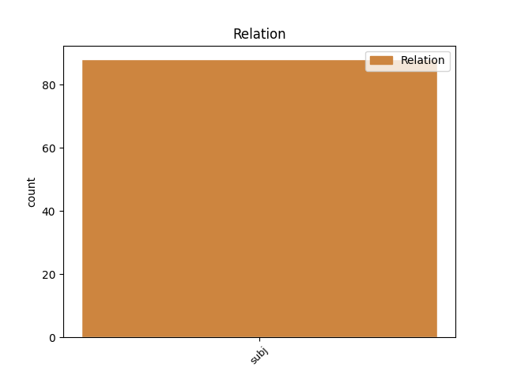
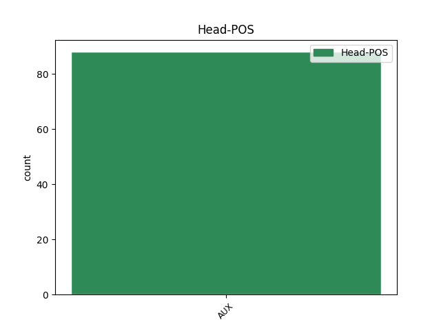
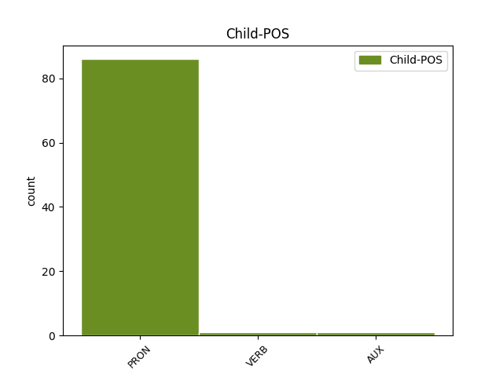

Distribution of features within this leaf



Agreement Rules sorted by frequency.
- When the dependent token is the subject(subj) of the head token, and the head token is AUX and the dependent token is PRON.
1 onadva _ _ _ _ 0 _ _ _
2 sta _ _ _ _ 0 _ _ _
3 iz _ _ _ _ 0 _ _ _
4 logarske _ _ _ _ 0 _ _ _
5 doline _ _ _ _ 0 _ _ _
6 ti ti PRON Pp2-sn Case=Nom|Number=Sing|Person=2|PronType=Prs 7 subj _ msd=Zod-ei|word=ti
7 si biti AUX Va-r2s-n Mood=Ind|Number=Sing|Person=2|Polarity=Pos|Tense=Pres|VerbForm=Fin 0 _ _ _
8 pa _ _ _ _ 0 _ _ _
9 tu _ _ _ _ 0 _ _ _
10 naš _ _ _ _ 0 _ _ _
11 kleni _ _ _ _ 0 _ _ _
12 pohorec _ _ _ _ 0 _ _ _
13 [gap] _ _ _ _ 0 _ _ _
14 … _ _ _ _ 0 _ _ _
15 zelenega _ _ _ _ 0 _ _ _
16 pohorja _ _ _ _ 0 _ _ _
1 kar _ _ _ _ 0 _ _ _
2 je biti AUX Va-r3s-n Mood=Ind|Number=Sing|Person=3|Polarity=Pos|Tense=Pres|VerbForm=Fin 7 subj _ msd=Gp-ste-n|word=je
3 prikazano _ _ _ _ 0 _ _ _
4 na _ _ _ _ 0 _ _ _
5 tej _ _ _ _ 0 _ _ _
6 simulaciji _ _ _ _ 0 _ _ _
7 je biti AUX Va-r3s-n Mood=Ind|Number=Sing|Person=3|Polarity=Pos|Tense=Pres|VerbForm=Fin 0 _ _ _
8 da _ _ _ _ 0 _ _ _
9 imate _ _ _ _ 0 _ _ _
10 na _ _ _ _ 0 _ _ _
11 levi _ _ _ _ 0 _ _ _
12 strani _ _ _ _ 0 _ _ _
13 se _ _ _ _ 0 _ _ _
14 pravi _ _ _ _ 0 _ _ _
15 tukajle _ _ _ _ 0 _ _ _
16 imate _ _ _ _ 0 _ _ _
17 pogled _ _ _ _ 0 _ _ _
18 opsala _ _ _ _ 0 _ _ _
19 malo _ _ _ _ 0 _ _ _
20 smo _ _ _ _ 0 _ _ _
21 odjadrali _ _ _ _ 0 _ _ _
1 eee _ _ _ _ 0 _ _ _
2 zdaj _ _ _ _ 0 _ _ _
3 pa _ _ _ _ 0 _ _ _
4 tudi _ _ _ _ 0 _ _ _
5 cena _ _ _ _ 0 _ _ _
6 se _ _ _ _ 0 _ _ _
7 meni _ _ _ _ 0 _ _ _
8 osemdeset _ _ _ _ 0 _ _ _
9 evrov _ _ _ _ 0 _ _ _
10 ste _ _ _ _ 0 _ _ _
11 najbrž _ _ _ _ 0 _ _ _
12 tudi _ _ _ _ 0 _ _ _
13 prebrali _ _ _ _ 0 _ _ _
14 n _ _ _ _ 0 _ _ _
15 [gap] _ _ _ _ 0 _ _ _
16 ni _ _ _ _ 0 _ _ _
17 nekako _ _ _ _ 0 _ _ _
18 glede _ _ _ _ 0 _ _ _
19 na _ _ _ _ 0 _ _ _
20 to _ _ _ _ 0 _ _ _
21 da _ _ _ _ 0 _ _ _
22 ima _ _ _ _ 0 _ _ _
23 eee _ _ _ _ 0 _ _ _
24 življenjsko _ _ _ _ 0 _ _ _
25 dobo _ _ _ _ 0 _ _ _
26 ne _ _ _ _ 0 _ _ _
27 vem _ _ _ _ 0 _ _ _
28 in _ _ _ _ 0 _ _ _
29 ni biti AUX Va-r3s-y Mood=Ind|Number=Sing|Person=3|Polarity=Neg|Tense=Pres|VerbForm=Fin 0 _ _ _
30 bila _ _ _ _ 0 _ _ _
31 ravno _ _ _ _ 0 _ _ _
32 določena _ _ _ _ 0 _ _ _
33 točno _ _ _ _ 0 _ _ _
34 kdaj _ _ _ _ 0 _ _ _
35 jo _ _ _ _ 0 _ _ _
36 ima imeti VERB Vmpr3s-n Aspect=Imp|Mood=Ind|Number=Sing|Person=3|Polarity=Pos|Tense=Pres|VerbForm=Fin 29 subj _ msd=Ggnste-n|word=ima
37 konec _ _ _ _ 0 _ _ _
Disagree Examples:
1 da _ _ _ _ 0 _ _ _
2 mene jaz PRON Pp1-sg Case=Gen|Number=Sing|Person=1|PronType=Prs 4 subj _ msd=Zop-er|word=mene
3 itak _ _ _ _ 0 _ _ _
4 ni biti AUX Va-r3s-y Mood=Ind|Number=Sing|Person=3|Polarity=Neg|Tense=Pres|VerbForm=Fin 0 _ _ _
5 bilo _ _ _ _ 0 _ _ _
6 [name:personal] _ _ _ _ 0 _ _ _
7 ni _ _ _ _ 0 _ _ _
8 bilo _ _ _ _ 0 _ _ _
1 t _ _ _ _ 0 _ _ _
2 [gap] _ _ _ _ 0 _ _ _
3 tudi _ _ _ _ 0 _ _ _
4 mogoče _ _ _ _ 0 _ _ _
5 tudi _ _ _ _ 0 _ _ _
6 mogoče _ _ _ _ 0 _ _ _
7 zaradi _ _ _ _ 0 _ _ _
8 tega _ _ _ _ 0 _ _ _
9 če _ _ _ _ 0 _ _ _
10 bosta biti AUX Va-f3d-n Mood=Ind|Number=Dual|Person=3|Polarity=Pos|Tense=Fut|VerbForm=Fin 0 _ _ _
11 res _ _ _ _ 0 _ _ _
12 šla _ _ _ _ 0 _ _ _
13 vidva ti PRON Pp2mdn Case=Nom|Gender=Masc|Number=Dual|Person=2|PronType=Prs 10 subj _ msd=Zodmdi|word=vidva
14 v _ _ _ _ 0 _ _ _
15 dvoboj _ _ _ _ 0 _ _ _
16 da _ _ _ _ 0 _ _ _
17 imaš _ _ _ _ 0 _ _ _
18 pač _ _ _ _ 0 _ _ _
19 ti _ _ _ _ 0 _ _ _
20 prednost _ _ _ _ 0 _ _ _
21 da _ _ _ _ 0 _ _ _
22 lahko _ _ _ _ 0 _ _ _
23 ne _ _ _ _ 0 _ _ _
24 izbereš _ _ _ _ 0 _ _ _
25 način _ _ _ _ 0 _ _ _
26 dvoboja _ _ _ _ 0 _ _ _
27 ne _ _ _ _ 0 _ _ _
1 če _ _ _ _ 0 _ _ _
2 bosta biti AUX Va-f3d-n Mood=Ind|Number=Dual|Person=3|Polarity=Pos|Tense=Fut|VerbForm=Fin 0 _ _ _
3 seveda _ _ _ _ 0 _ _ _
4 šla _ _ _ _ 0 _ _ _
5 vidva ti PRON Pp2mdn Case=Nom|Gender=Masc|Number=Dual|Person=2|PronType=Prs 2 subj _ msd=Zodmdi|word=vidva
6 če _ _ _ _ 0 _ _ _
7 ne _ _ _ _ 0 _ _ _
8 [gap] _ _ _ _ 0 _ _ _
9 ojo _ _ _ _ 0 _ _ _
10 šle _ _ _ _ 0 _ _ _
11 punce _ _ _ _ 0 _ _ _
12 ali _ _ _ _ 0 _ _ _
1 jaz _ _ _ _ 0 _ _ _
2 sem _ _ _ _ 0 _ _ _
3 tudi _ _ _ _ 0 _ _ _
4 eee _ _ _ _ 0 _ _ _
5 moj _ _ _ _ 0 _ _ _
6 oče _ _ _ _ 0 _ _ _
7 je _ _ _ _ 0 _ _ _
8 bil _ _ _ _ 0 _ _ _
9 čevljar _ _ _ _ 0 _ _ _
10 mati _ _ _ _ 0 _ _ _
11 je _ _ _ _ 0 _ _ _
12 bila _ _ _ _ 0 _ _ _
13 gospodinja _ _ _ _ 0 _ _ _
14 šest _ _ _ _ 0 _ _ _
15 otrok _ _ _ _ 0 _ _ _
16 nas jaz PRON Pp1-pg Case=Gen|Number=Plur|Person=1|PronType=Prs 17 subj _ msd=Zop-mr|word=nas
17 je biti AUX Va-r3s-n Mood=Ind|Number=Sing|Person=3|Polarity=Pos|Tense=Pres|VerbForm=Fin 0 _ _ _
18 bilo _ _ _ _ 0 _ _ _
19 mi _ _ _ _ 0 _ _ _
20 smo _ _ _ _ 0 _ _ _
21 eee _ _ _ _ 0 _ _ _
22 praznovali _ _ _ _ 0 _ _ _
23 bolj _ _ _ _ 0 _ _ _
24 revno _ _ _ _ 0 _ _ _
1 vidve ti PRON Pp2fdn Case=Nom|Gender=Fem|Number=Dual|Person=2|PronType=Prs 3 subj _ msd=Zodzdi|word=vidve
2 se _ _ _ _ 0 _ _ _
3 bosta biti AUX Va-f3d-n Mood=Ind|Number=Dual|Person=3|Polarity=Pos|Tense=Fut|VerbForm=Fin 0 _ _ _
4 pa _ _ _ _ 0 _ _ _
5 tako _ _ _ _ 0 _ _ _
6 spoznali _ _ _ _ 0 _ _ _
7 midve _ _ _ _ 0 _ _ _
8 se _ _ _ _ 0 _ _ _
9 pa _ _ _ _ 0 _ _ _
10 gledava _ _ _ _ 0 _ _ _
11 pa _ _ _ _ 0 _ _ _
12 gledava _ _ _ _ 0 _ _ _
13 pa _ _ _ _ 0 _ _ _
14 vem _ _ _ _ 0 _ _ _
15 ker _ _ _ _ 0 _ _ _
16 mi _ _ _ _ 0 _ _ _
17 je _ _ _ _ 0 _ _ _
18 že _ _ _ _ 0 _ _ _
19 enkrat _ _ _ _ 0 _ _ _
20 pripovedovala _ _ _ _ 0 _ _ _
21 ne _ _ _ _ 0 _ _ _
22 da _ _ _ _ 0 _ _ _
23 ima _ _ _ _ 0 _ _ _
24 eno _ _ _ _ 0 _ _ _
25 kolegico _ _ _ _ 0 _ _ _
26 eee _ _ _ _ 0 _ _ _
27 ki _ _ _ _ 0 _ _ _
28 ima _ _ _ _ 0 _ _ _
29 sina _ _ _ _ 0 _ _ _
30 ki _ _ _ _ 0 _ _ _
31 je _ _ _ _ 0 _ _ _
32 bil _ _ _ _ 0 _ _ _
33 na _ _ _ _ 0 _ _ _
34 [name:organisation] _ _ _ _ 0 _ _ _
35 šoli _ _ _ _ 0 _ _ _
36 in _ _ _ _ 0 _ _ _
37 da _ _ _ _ 0 _ _ _
38 sem _ _ _ _ 0 _ _ _
39 jim _ _ _ _ 0 _ _ _
40 jaz _ _ _ _ 0 _ _ _
41 mu _ _ _ _ 0 _ _ _
42 bila _ _ _ _ 0 _ _ _
43 razredničarka _ _ _ _ 0 _ _ _